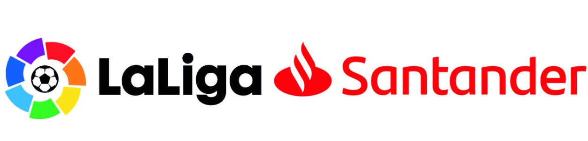

| PRIMERA DIVISIÓN  | ||
| Nombre | Escudo | Equipación |
| Real Madrid FC |
|
Blanca |
| Negro | ||
| FC Barcelona |
|
Azulgrana |
| Rosa | ||
| Real Betis Balonpié |
|
Verdiblanco |
| Morado | ||
| Atletico de Madrid |
|
Rojiblanco |
| Azul | ||
| Cadiz FC |
|
Rojiblanco |
| Azul | ||
SEGUNDA DIVISIÓN  |
||
| Nombre | Escudo | Equipación |
| Albacete Balonpié |
 |
Blanca |
| Rosa | ||
| Real Zaragoza |
 |
Blanca |
| Amarillo | ||
| U.D. Las Palmas |
 |
Blanca |
| Amarillo | ||
| Sporting de Gijon |
 |
Amarillo |
| Azul | ||
| Rayo Vallecano |
 |
Blanco |
| Azul | ||